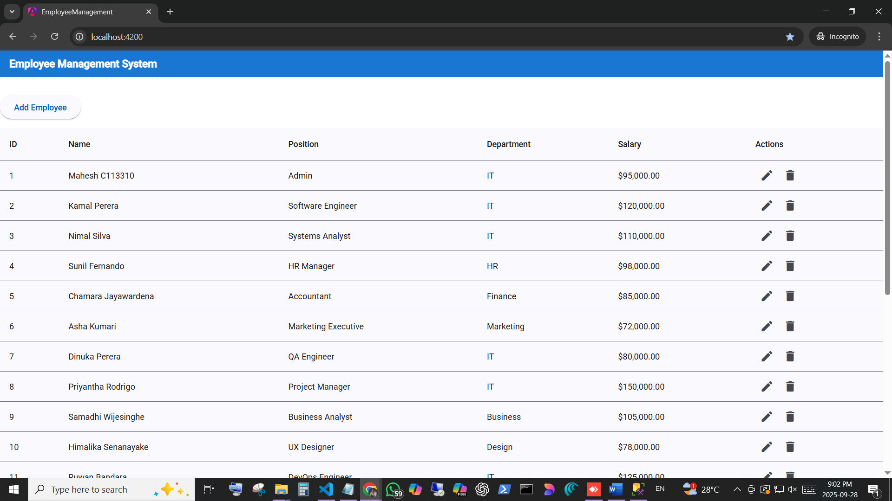
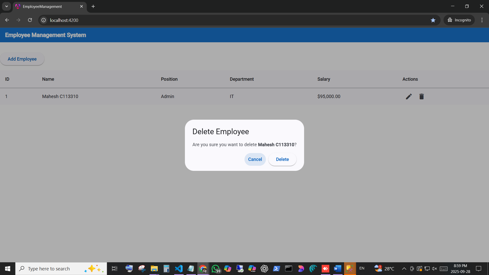
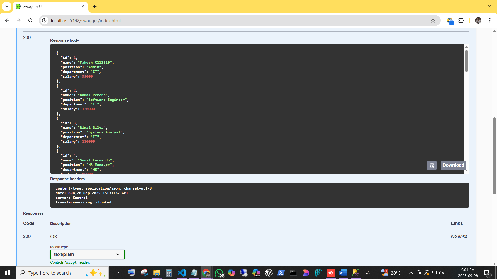
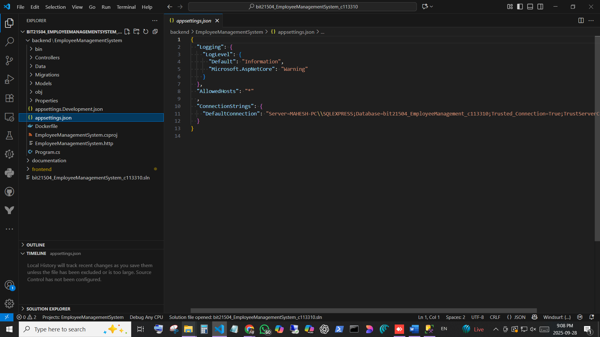
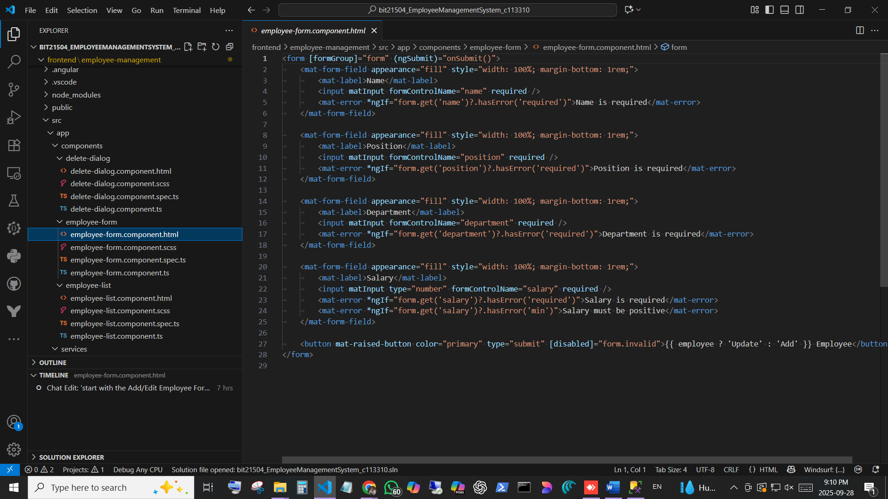

BIT21504 - Web Related Frameworks II
Practical Assignment: Employee Management System — Submission Report
Repository: https://github.com/MaheshJayasuriya/bit21504_EmployeeManagementSystem_c113310/
Deliverables Coverage
- GitHub Repository containing the full source code.
Location in workspace: project root (contains `backend/` and `frontend/`).
- Postman Collection (or Swagger) for testing API endpoints.
Swagger is enabled in Development for the ASP.NET Core Web API. See screenshot below.
- Database SQL Script for creating the Employee table.
- Screenshots of the working application (Frontend & Backend).
Implemented Features (including bonus)
- Full CRUD API for Employee (GET, POST, PUT, DELETE).
- Angular frontend with Employee list, Add/Edit form, Delete confirmation dialog.
- Pagination & search on the employee list (bonus).
- Angular Material snackbar notifications (bonus).
- Dockerfile added for both backend and frontend (bonus).
Database SQL Script (insert sample rows)
A seed SQL script was placed at backend/seed/insert_sri_lankan_employees.sql.
-- INSERT sample rows (see the file in repository)
-- Inserted 20 sample Sri Lankan employees (Kamal Perera, Nimal Silva, ... Hashan Fernando)
Screenshots
Screenshots located at: documentation/screenshots/

Employee List (with pagination & search)

Delete confirmation dialog

Swagger UI showing API endpoints

Backend project structure

Frontend project structure
How to run (short)
- Backend: open `backend/EmployeeManagementSystem` and run `dotnet run`. By default in Development the API listens on
http://localhost:5192.
- Database: apply migrations (dotnet ef database update) or run the provided SQL script(s) in `backend/seed/` using SSMS.
- Frontend: open `frontend/employee-management` and run `npm install --legacy-peer-deps` then `ng serve` (or build & serve the `dist/` for production).